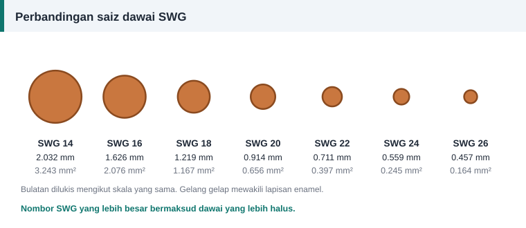

Dawai dan penebat
Jadual Saiz Dawai SWG, AWG dan Milimeter untuk Lilitan Motor
Dawai belitan dijual mengikut tiga sistem: diameter metrik dalam milimeter, SWG (Standard Wire Gauge, sistem British) dan AWG (American Wire Gauge). Gunakan jadual di bawah untuk menukar antara ketiga-tiganya.


Jadual SWG kepada milimeter
| SWG | Diameter (mm) | Luas keratan (mm²) | Saiz metrik terdekat (mm) |
|---|---|---|---|
| 10 | 3.251 | 8.3009 | 3.150 |
| 11 | 2.946 | 6.8164 | 3.000 |
| 12 | 2.642 | 5.4822 | 2.650 |
| 13 | 2.337 | 4.2895 | 2.360 |
| 14 | 2.032 | 3.2429 | 2.000 |
| 15 | 1.829 | 2.6273 | 1.800 |
| 16 | 1.626 | 2.0765 | 1.600 |
| 17 | 1.422 | 1.5881 | 1.400 |
| 18 | 1.219 | 1.1671 | 1.250 |
| 19 | 1.016 | 0.8107 | 1.000 |
| 20 | 0.914 | 0.6561 | 0.900 |
| 21 | 0.813 | 0.5191 | 0.800 |
| 22 | 0.711 | 0.3970 | 0.710 |
| 23 | 0.610 | 0.2922 | 0.600 |
| 24 | 0.559 | 0.2454 | 0.560 |
| 25 | 0.508 | 0.2027 | 0.500 |
| 26 | 0.457 | 0.1642 | 0.450 |
| 27 | 0.417 | 0.1363 | 0.425 |
| 28 | 0.376 | 0.1110 | 0.375 |
| 29 | 0.345 | 0.0937 | 0.355 |
| 30 | 0.315 | 0.0779 | 0.315 |
| 31 | 0.295 | 0.0682 | 0.300 |
| 32 | 0.274 | 0.0591 | 0.280 |
| 33 | 0.254 | 0.0507 | 0.250 |
| 34 | 0.234 | 0.0429 | 0.236 |
| 35 | 0.213 | 0.0358 | 0.212 |
| 36 | 0.193 | 0.0293 | 0.190 |
| 37 | 0.173 | 0.0234 | 0.170 |
| 38 | 0.152 | 0.0182 | 0.150 |
| 39 | 0.132 | 0.0137 | 0.132 |
| 40 | 0.122 | 0.0117 | 0.125 |
Jadual AWG kepada milimeter
| AWG | Diameter (mm) | Luas keratan (mm²) | Saiz metrik terdekat (mm) |
|---|---|---|---|
| 10 | 2.588 | 5.2612 | 2.650 |
| 11 | 2.305 | 4.1723 | 2.360 |
| 12 | 2.053 | 3.3088 | 2.000 |
| 13 | 1.828 | 2.6240 | 1.800 |
| 14 | 1.628 | 2.0809 | 1.600 |
| 15 | 1.450 | 1.6502 | 1.400 |
| 16 | 1.291 | 1.3087 | 1.320 |
| 17 | 1.150 | 1.0378 | 1.120 |
| 18 | 1.024 | 0.8230 | 1.000 |
| 19 | 0.912 | 0.6527 | 0.900 |
| 20 | 0.812 | 0.5176 | 0.800 |
| 21 | 0.723 | 0.4105 | 0.710 |
| 22 | 0.644 | 0.3255 | 0.630 |
| 23 | 0.573 | 0.2582 | 0.560 |
| 24 | 0.511 | 0.2047 | 0.500 |
| 25 | 0.455 | 0.1624 | 0.450 |
| 26 | 0.405 | 0.1288 | 0.400 |
| 27 | 0.361 | 0.1021 | 0.355 |
| 28 | 0.321 | 0.0810 | 0.315 |
| 29 | 0.286 | 0.0642 | 0.280 |
| 30 | 0.255 | 0.0509 | 0.250 |
| 31 | 0.227 | 0.0404 | 0.224 |
| 32 | 0.202 | 0.0320 | 0.200 |
| 33 | 0.180 | 0.0254 | 0.180 |
| 34 | 0.160 | 0.0201 | 0.160 |
| 35 | 0.143 | 0.0160 | 0.140 |
| 36 | 0.127 | 0.0127 | 0.125 |
| 37 | 0.113 | 0.0100 | 0.112 |
| 38 | 0.101 | 0.0080 | 0.100 |
| 39 | 0.090 | 0.0063 | 0.100 |
| 40 | 0.080 | 0.0050 | 0.100 |
Membaca nombor tolok
- Nombor yang lebih besar bermaksud dawai yang lebih halus, dalam kedua-dua sistem.
- SWG dan AWG tidak sama. SWG 20 berdiameter 0.914 mm, manakala AWG 20 berdiameter 0.812 mm.
- AWG mengikut janjang geometri. Setiap enam nombor, diameter berubah kira-kira dua kali ganda. Setiap tiga nombor, luas berubah kira-kira dua kali ganda.
- SWG ditakrifkan dalam inci. SWG 19 ialah 0.040 inci dan SWG 20 ialah 0.036 inci.
Saiz metrik
Dawai metrik mengikut siri nombor pilihan, contohnya 0.50, 0.56, 0.63, 0.71, 0.80, 0.90, 1.00, 1.12 dan 1.25 mm, dengan saiz perantaraan seperti 0.67, 0.75, 0.85, 0.95 dan 1.06 mm. Setiap langkah dalam siri utama menambah luas kira-kira satu perempat.
Diameter kuprum dan diameter luar
Semua diameter dalam jadual ialah diameter kuprum tanpa enamel. Lapisan enamel menambah beberapa peratus kepada diameter luar, dan lebih banyak bagi gred enamel yang lebih tebal. Luas keratan yang digunakan dalam pengiraan arus sentiasa merujuk kepada kuprum sahaja.
Cara mengukur dawai lama
- Ambil sepotong dawai lurus daripada gegelung lama.
- Buang enamel dengan membakarnya sebentar dan mengelap dengan kain, atau dengan mengikis perlahan-lahan.
- Ukur dengan mikrometer di tiga tempat dan ambil purata.
- Padankan dengan saiz piawai terdekat dalam jadual.
Tolok dawai berlubang berguna untuk semakan pantas, tetapi mikrometer lebih tepat untuk dawai halus.
Jika saiz yang dicari tiada
Pilih saiz piawai seterusnya yang lebih besar jika alur mengizinkan, atau gabungkan beberapa dawai halus seperti diterangkan dalam dawai selari. Tab "Dawai setara" pada kalkulator menyenaraikan gabungan yang sepadan.
Rujukan dan bacaan lanjut
Artikel berkaitan
Memilih Saiz Dawai Belitan: Ketumpatan Arus dan Luas Keratan
Dawai terlalu halus cepat panas, dawai terlalu tebal tidak muat dalam alur. Ketumpatan arus membantu memilih luas keratan kuprum yang seimbang untuk setiap motor.
Menggunakan Dawai Selari Sebagai Ganti Saiz yang Tiada
Saiz dawai yang diperlukan tiada di kedai? Dua atau tiga dawai halus selari boleh menggantikannya asalkan jumlah luas keratan kekal. Lihat formula dan jadual gabungan.
Mengira Panjang dan Berat Dawai Kuprum untuk Lilitan Semula
Dawai kuprum dijual mengikut berat, bukan panjang. Kira panjang purata satu lilitan, jumlah panjang dan berat yang perlu dibeli supaya tidak terkurang di tengah kerja.